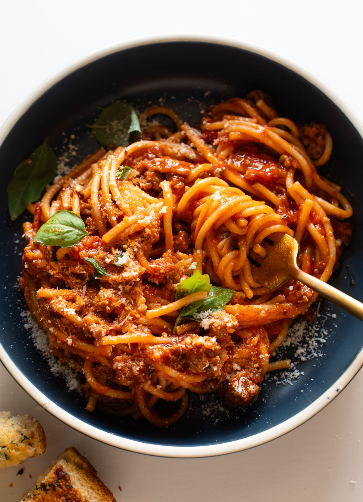

Instant Pot Spaghetti

Description
My whole family loves this Instant Pot Spaghetti! Silky, flavorful, and delightfully clingy. Easy enough for my kids to make it too!
Ingredients
- 1 tbs olive oil
- 1 pound ground beef
- 1/2 teaspoon each garlic powder, onion powder, Italian seasoning
- 1 clove garlic, minced
- 1 teaspoon salt
- 1 jar pasta sauce
- 1 cup water
- 1 teaspoon Better than Bouillon
- 8 ounces spaghetti
- butter, parmesan cheese parsley, red pepper flakes to taste
Steps
- Meat: Turn the sauté function on in the Instant Pot. Add oil, ground meat, garlic powder, onion powder, Italian seasoning, garlic, and salt to the Instant Pot. It should sizzle. Sauté until the meat is browned and cooked through.
- Sauce: Add the jar of sauce, the water, Better than Bouillon, and the noodles. Make sure the noodles are tucked underneath the liquid.
- Cook: Cover, seal, and cook on high pressure for 8 minutes.
- Release Steam: Lay a towel over the vent to avoid splatters; release the steam right away to avoid overcooking the noodles.
- Rest: When you open the cover, the noodles will be cooked and it will look very saucy / wet. Use tongs to stir it up and distribute the sauce; let everything rest for 10 minutes. This is important because the noodles will absorb the sauce and everything will cling together just right!
- Done! Stir the butter in until melted and a little creamy. Top with Parmesan, serve with house favorite garlic bread to dunk in the sauce, and get a simple green salad on the side. Oooh so good.